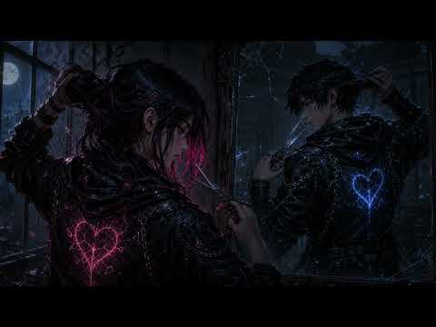
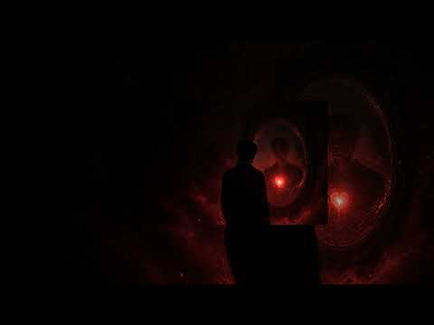

YouTube player · Press play when you’re ready. Open on YouTube ↗
Watch
The Man Beneath the Moon
From Broken Man, by GhostHeart.
Album 01 / 09 · GhostHeart
The strength hidden inside people the world has written off.

Read · The album story
BROKEN MAN is an album about the battles people carry in silence—addiction, abuse, grief, shame, mental illness, and the fight to survive yourself.
This isn’t a request for sympathy, and it isn’t pain competing against pain. These songs tell the truth about being broken, what it takes to keep going, and the strength hidden inside people the world has written off.
If one song helps someone feel understood—or gives them enough strength to make it through another day—then this album has done what it was created to do.
Welcome to BROKEN MAN.
Listen · The songs
2 songs to spend some time with.

Watch · Stay with the story
YouTube player · Press play when you’re ready. Open on YouTube ↗
Watch
From Broken Man, by GhostHeart.
YouTube player · Press play when you’re ready. Open on YouTube ↗
Watch
From Broken Man, by GhostHeart.